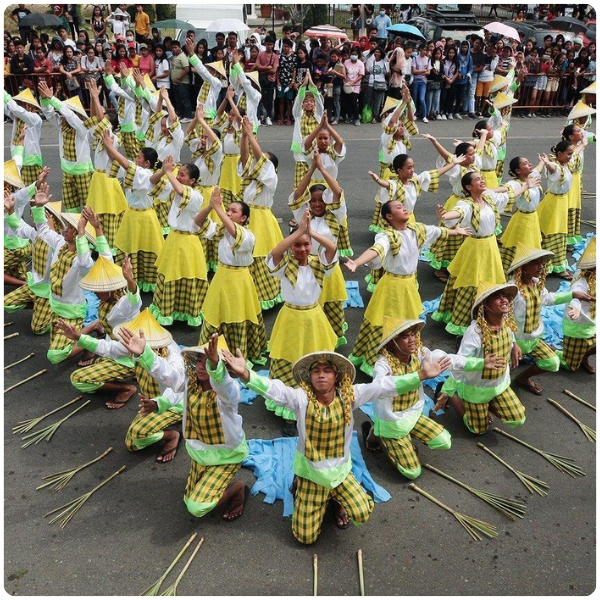
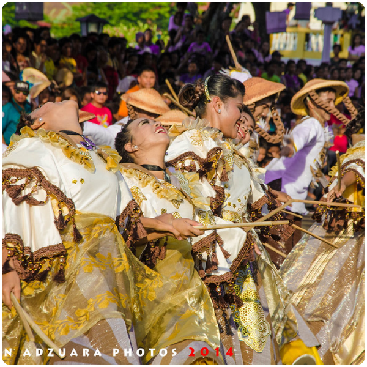
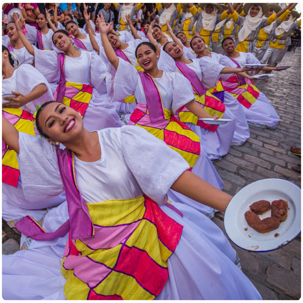
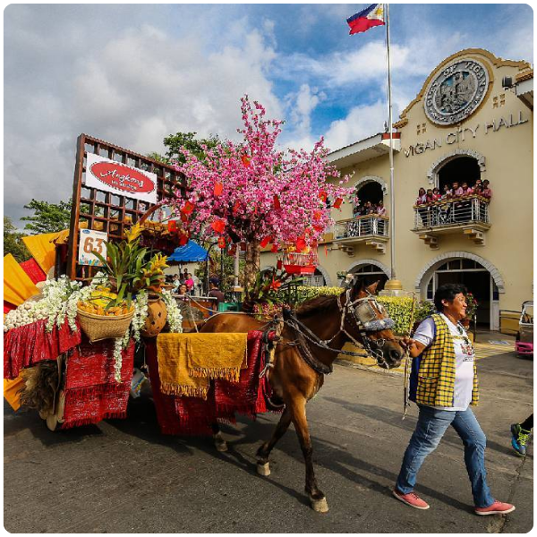
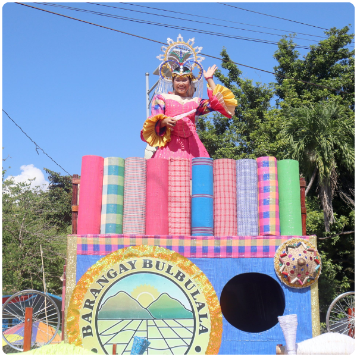

Celebrations & Heritage
Ilocos Sur is a province deeply rooted in tradition. Its festivals are vibrant expressions of faith, history, and Ilocano identity — blending centuries-old Spanish Catholic traditions with indigenous customs to create unique celebrations that draw visitors from across the Philippines and the world.

Festival Spotlight
The Kannawidan Ylocos Festival (Kannawidan meaning "to remember" in Ilocano) is a grand provincial celebration held every February to commemorate the founding anniversary of Ilocos Sur and showcase the province's rich heritage, culture, and products.
The week-long festival features a spectacular street dancing competition where dancers in colorful costumes showcase traditional Ilocano dances. Trade fairs highlight local crafts including Abel weaving and Burnay pottery. Agricultural and livestock shows demonstrate the province's farming heritage, while food festivals spotlight Ilocano cuisine.
"Kannawidan is more than a festival — it's a declaration of Ilocano pride and a living showcase of four centuries of rich history."
Festival Spotlight
The Vigan City Fiesta celebrates the feast day of Paul the Apostle, the patron saint of Vigan's famous cathedral. This is one of the oldest and most important religious celebrations in northern Luzon, drawing thousands of pilgrims and tourists.
The fiesta begins with a solemn novena of Masses at the Metropolitan Cathedral of Vigan. Calle Crisologo is decorated with traditional parol lanterns and Chinese paper decorations. Kalesas are adorned with flowers and parade through the heritage streets. The celebration culminates in a spectacular fireworks display over the Mestizo River.
Highlight: The Carroza procession — where the image of the patron saint is paraded through Calle Crisologo in an ornate flower-decorated carriage — is a sight of extraordinary beauty.


Festival Spotlight
The Vigan Longganisa Festival celebrates the city's most famous culinary export — the garlicky, vinegary Vigan longganisa sausage. The festival is a gastronomic extravaganza where the city's best longganisa makers compete for the title of the best Vigan longganisa.
Street stalls along Plaza Burgos offer free tastings of longganisa served with sinanglaw (beef soup) and warm rice. Cooking demonstrations show the traditional process of making longganisa. The festival also includes a cookathon where chefs create innovative dishes using longganisa as the star ingredient.
Festival Spotlight
The Viva Vigan Festival of the Arts is a week-long celebration held every May to commemorate the founding anniversary of Vigan City. It is one of the most colorful and culturally rich festivals in the Ilocos region, blending heritage, arts, and community pride.
The festival features street dancing competitions, cultural shows, art exhibits inside ancestral homes, kalesa parades along Calle Crisologo, and a grand fireworks display. Local artisans showcase Abel weaving, Burnay pottery, and traditional Ilocano crafts. The entire heritage zone comes alive with music, color, and centuries-old Ilocano tradition.
"Viva Vigan is the city's proudest celebration — a vibrant tribute to everything that makes Vigan one of the most unique cities in all of Asia."


Festival Spotlight
The Abel Weaving Festival celebrates Ilocos Sur's most iconic traditional craft — the Abel Iloco hand-woven fabric. Master weavers from across the province gather to display their finest works, demonstrate their age-old techniques on wooden looms, and compete for the title of the most intricate and beautiful Abel design.
Visitors can watch weavers at work, try weaving on a traditional loom, and purchase authentic Abel products directly from the artisans — from scarves and bags to blankets and table runners. The festival is a powerful reminder that Ilocano craftsmanship is a living, breathing art form passed down through generations.
"Every thread of Abel cloth carries with it centuries of Ilocano patience, creativity, and cultural identity."
Cultural Events
Vigan's cemeteries transform into lantern-lit gatherings where families celebrate their ancestors. Calle Crisologo glows with hundreds of candles and parol lanterns in a uniquely moving spectacle.
Calle Crisologo and the heritage zone are adorned with traditional parol lanterns during Christmas, turning the already magical street into a glowing festive wonder unlike anywhere else in the Philippines.
Each of Ilocos Sur's municipalities celebrates its patron saint's feast day with processions, brass band performances, traditional dances, and elaborate community feasts open to all visitors.
Candon City celebrates its founding anniversary every June with street dancing, trade fairs, cultural shows, and a grand parade showcasing the city's agricultural heritage and Ilocano pride.
A special fair held near the Vigan burnay kilns where potters display and sell their finest clay works. Visitors can join pottery-making workshops and take home a piece of authentic Ilocano craftsmanship.